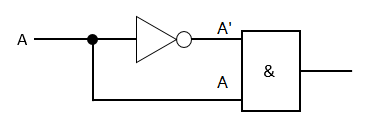
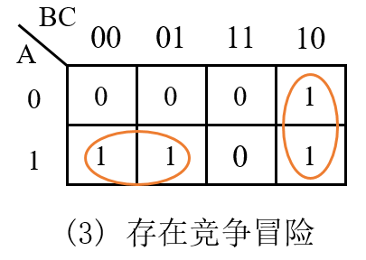
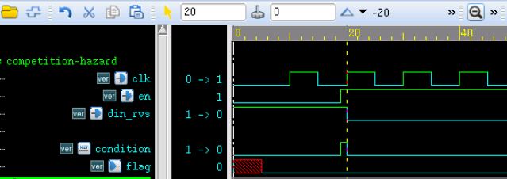
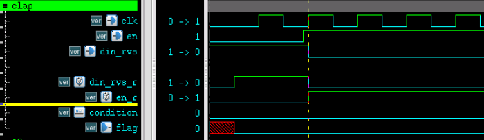

关键字：竞争，冒险，书写规范
产生原因
数字电路中，信号传输与状态变换时都会有一定的延时。
- 在组合逻辑电路中，不同路径的输入信号变化传输到同一点门级电路时，在时间上有先有后，这种先后所形成的时间差称为竞争（Competition）。
- 由于竞争的存在，输出信号需要经过一段时间才能达到期望状态，过渡时间内可能产生瞬间的错误输出，例如尖峰脉冲。这种现象被称为冒险（Hazard）。
- 竞争不一定有冒险，但冒险一定会有竞争。 例如，对于给定逻辑 F = A & A'，电路如左下图所示。
由于反相器电路的存在，信号 A' 传递到与门输入端的时间相对于信号 A 会滞后，这就可能导致与门最后的输出结果 F 会出现干扰脉冲。如右下图所示。


其实实际硬件电路中，只要门电路各个输入端延时不同，就有可能产生竞争与冒险。
例如一个简单的与门，输入信号源不一定是同一个信号变换所来，由于硬件工艺、其他延迟电路的存在，也可能产生竞争与冒险，如下图所示。

判断方法
代数法
在逻辑表达式，保持一个变量固定不动，将剩余其他变量用 0 或 1 代替，如果最后逻辑表达式能化简成
Y = A + A'
或
Y = A · A'
的形式，则可判定此逻辑存在竞争与冒险。
例如逻辑表达式 Y = AB + A'C，在 B=C=1 的情况下，可化简为 Y = A + A'。显然，A 状态的改变，势必会造成电路存在竞争冒险。
卡诺图法
有两个相切的卡诺圈，并且相切处没有其他卡诺圈包围，可能会出现竞争与冒险现象。
例如左下图所存在竞争与冒险，右下图则没有。

其实，卡诺图本质上还是对逻辑表达式的一个分析，只是可以进行直观的判断。
例如，左上图逻辑表达式可以简化为 Y = A'B' + AC，当 B=0 且 C=1 时，此逻辑表达式又可以表示为 Y = A' + A。所以肯定会存在竞争与冒险。
右上图逻辑表达式可以简化为 Y = A'B' + AB，显然 B 无论等于 1 还是 0，此式都不会化简成 Y = A' + A。所以此逻辑不存在竞争与冒险。
需要注意的是，卡诺图是首尾相临的。如下图所示，虽然看起来两个卡诺圈并没有相切，但实际上，m6 与 m4 也是相邻的，所以下面卡诺图所代表的数字逻辑也会产生竞争与冒险。

其他较为复杂的情况，可能需要采用 "计算机辅助分析 + 实验" 的方法。
消除方法
对数字电路来说，常见的避免竞争与冒险的方法主要有 4 种。
1）增加滤波电容，滤除窄脉冲
此种方法需要在输出端并联一个小电容，将尖峰脉冲的幅度削弱至门电路阈值以下。
此方法虽然简单，但是会增加输出电压的翻转时间，易破坏波形。
2）修改逻辑，增加冗余项
利用卡诺图，在两个相切的圆之间，增加一个卡诺圈，并加在逻辑表达式之中。
如下图所示，对数字逻辑 Y = A'B' + AC 增加冗余项 B'C，则此电路逻辑可以表示为 Y = A'B' + AC + B'C。此时电路就不会再存在竞争与冒险。

3）使用时钟同步电路，利用触发器进行打拍延迟
同步电路信号的变化都发生在时钟边沿。对于触发器的 D 输入端，只要毛刺不出现在时钟的上升沿并且不满足数据的建立和保持时间，就不会对系统造成危害，因此可认为 D 触发器的 D 输入端对毛刺不敏感。 利用此特性，在时钟边沿驱动下，对一个组合逻辑信号进行延迟打拍，可消除竞争冒险。
延迟一拍时钟时，会一定概率的减少竞争冒险的出现。实验表明，最安全的打拍延迟周期是 3 拍，可有效减少竞争冒险的出现。
当然，最终还是需要根据自己的设计需求，对信号进行合理的打拍延迟。
为说明对信号进行打拍延迟可以消除竞争冒险，我们建立下面的代码模型。
实例
(
input clk ,
input rstn ,
input en ,
input din_rvs ,
output reg flag
);
wire condition = din_rvs & en ; //combination logic
always @(posedge clk or negedge !rstn) begin
if (!rstn) begin
flag <= 1'b0 ;
end
else begin
flag <= condition ;
end
end
endmodule
testbench 描述如下：
实例
module test ;
reg clk, rstn ;
reg en ;
reg din_rvs ;
wire flag_safe, flag_dgs ;
//clock and rstn generating
initial begin
rstn = 1'b0 ;
clk = 1'b0 ;
#5 rstn = 1'b1 ;
forever begin
#5 clk = ~clk ;
end
end
initial begin
en = 1'b0 ;
din_rvs = 1'b1 ;
#19 ; en = 1'b1 ;
#1 ; din_rvs = 1'b0 ;
end
competition_hazard u_dgs
(
.clk (clk ),
.rstn (rstn ),
.en (en ),
.din_rvs (din_rvs ),
.flag (flag_dgs ));
initial begin
forever begin
#100;
if ($time >= 1000) $finish ;
end
end
endmodule // test
仿真结果如下:
由图可知，信号 condition 出现了一个尖峰脉冲，这是由于信号 din_rvs 与信号 en 相对于模块内部时钟都是异步的，所以到达内部门电路时的延时是不同的，就有可能造成竞争冒险。
虽然最后的仿真结果 flag 一直为 0，似乎是我们想要的结果。但是实际电路中，这个尖峰脉冲在时间上非常靠近时钟边沿，就有可能被时钟采集到而产生错误结果。

下面我们对模型进行改进，增加打拍延时的逻辑，如下：
实例
(
input clk ,
input rstn ,
input en ,
input din_rvs ,
output reg flag
);
reg din_rvs_r ;
reg en_r ;
always @(posedge clk or !rstn) begin
if (!rstn) begin
din_rvs_r <= 1'b0 ;
en_r <= 1'b0 ;
end
else begin
din_rvs_r <= din_rvs ;
en_r <= en ;
end
end
wire condition = din_rvs_r & en_r ;
always @(posedge clk or negedge !rstn) begin
if (!rstn) begin
flag <= 1'b0 ;
end
else begin
flag <= condition ;
end
end // always @ (posedge clk or negedge !rstn)
endmodule
将此模块例化到上述 testbench 中，得到如下仿真结果。
由图可知，信号 condition 没有尖峰脉冲的干扰了，仿真结果中 flag 为 0 也如预期。
其实，输入信号与时钟边沿非常接近的情况下，时钟对输入信号的采样也存在不确定性，但是不会出现尖峰脉冲的现象。对输入信号多打 2 拍，是更好的处理方式，对竞争与冒险有更好的抑制作用。

4）采用格雷码计数器
递加的多 bit 位计数器，计数值有时候会发生多个 bit 位的跳变。
例如计数器变量 counter 从 5 计数到 6 时， 对应二进制数字为 4'b101 到 4'b110 的转换。因为各 bit 数据位的延时，counter 的变换过程可能是： 4'b101 -> 4'b111 -> 4'b110。如果有以下逻辑描述，则信号 cout 可能出现短暂的尖峰脉冲，这显然是与设计相悖的。
cout = counter[3:0] == 4'd7 ;
而格雷码计数器，计数时相邻的数之间只有一个数据 bit 发生了变化，所以能有效的避免竞争冒险。
好在 Verilog 设计时，计数器大多都是同步设计。即便计数时存在多个 bit 同时翻转的可能性，但在时钟驱动的触发器作用下，只要信号间满足时序要求，就能消除掉 100% 的竞争与冒险。
小结
一般来说，为消除竞争冒险，增加滤波电容和逻辑冗余，都不是 Verilog 设计所考虑的。
计数采用格雷码计数器，大多数也是应用在高速时钟下减少信号翻转率来降低功耗的场合。
利用触发器在时钟同步电路下对异步信号进行打拍延时，是 Verilog 设计中经常用到的方法。
除此之外，为消除竞争冒险，Verilog 编码时还需要注意一些问题，详见下一小节。
Verilog 书写规范
在编程时多注意以下几点，也可以避免大多数的竞争与冒险问题。
- 1）时序电路建模时，用非阻塞赋值。
- 2）组合逻辑建模时，用阻塞赋值。
- 3）在同一个 always 块中建立时序和组合逻辑模型时，用非阻塞赋值。
- 4）在同一个 always 块中不要既使用阻塞赋值又使用非阻塞赋值。
- 5）不要在多个 always 块中为同一个变量赋值。
- 6）避免 latch 产生。
下面，对以上注意事项逐条分析。
1）时序电路建模时，用非阻塞赋值
前面讲述非阻塞赋值时就陈述过，时序电路中非阻塞赋值可以消除竞争冒险。
例如下面代码描述，由于无法确定 a 与 b 阻塞赋值的操作顺序，就有可能带来竞争冒险。
always @(posedge clk) begin
a = b ;
b = a ;
end
而使用非阻塞赋值时，赋值操作是同时进行的，所以就不会带来竞争冒险，如以下代码描述。
always @(posedge clk) begin
a <= b ;
b <= a ;
end
2）组合逻辑建模时，用阻塞赋值
例如，我们想实现 C = A&B, F=C&D 的组合逻辑功能，用非阻塞赋值语句如下。两条赋值语句同时赋值，F <= C & D 中使用的是信号 C 的旧值，所以导致此时的逻辑是错误的，F 的逻辑值不等于 A&B&D。
而且，此时要求信号 C 具有存储功能，但不是时钟驱动，所以 C 可能会被综合成锁存器（latch），导致竞争冒险。
always @(*) begin
C <= A & B ;
F <= C & D ;
end
对代码进行如下修改，F = C & D 的操作一定是在 C = A & B 之后，此时 F 的逻辑值等于 A&B&D，符合设计。
always @(*) begin
C = A & B ;
F = C & D ;
end
3）在同一个 always 块中建立时序和组合逻辑模型时，用非阻塞赋值
虽然时序电路中可能涉及组合逻辑，但是如果赋值操作使用非阻塞赋值，仍然会导致如规范 1 中所涉及的类似问题。
例如在时钟驱动下完成一个与门的逻辑功能，代码参考如下。
实例
if (!rst_n) begin
q <= 1'b0;
end
else begin
q <= a & b; //即便有组合逻辑，也不要写成：q = a & b
end
end
4）在同一个 always 块中不要既使用阻塞赋值又使用非阻塞赋值
always 涉及的组合逻辑中，既有阻塞赋值又有非阻塞赋值时，会导致意外的结果，例如下面代码描述。
此时信号 C 阻塞赋值完毕以后，信号 F 才会被非阻塞赋值，仿真结果可能正确。
但如果 F 信号有其他的负载，F 的最新值并不能马上传递出去，数据有效时间还是在下一个触发时刻。此时要求 F 具有存储功能，可能会被综合成 latch，导致竞争冒险。
always @(*) begin
C = A & B ;
F <= C & D ;
end
如下代码描述，仿真角度看，信号 C 被非阻塞赋值，下一个触发时刻才会有效。而 F = C & D 虽然是阻塞赋值，但是信号 C 不是阻塞赋值，所以 F 逻辑中使用的还是 C 的旧值。
always @(*) begin
C <= A & B ;
F = C & D ;
end下面分析假如在时序电路里既有阻塞赋值，又有非阻塞赋值会怎样，代码如下。
假如复位端与时钟同步，那么由于复位导致的信号 q 为 0，是在下一个时钟周期才有效。
而如果是信号 a 或 b 导致的 q 为 0，则在当期时钟周期内有效。
如果 q 还有其他负载，就会导致 q 的时序特别混乱，显然不符合设计需求。
实例
if (!rst_n) begin //假设复位与时钟同步
q <= 1'b0;
end
else begin
q = a & b;
end
end
需要说明的是，很多编译器都支持这么写，上述的分析也都是建立在仿真角度上。实际中如果阻塞赋值和非阻塞赋值混合编写，综合后的电路时序将是错乱的，不利于分析调试。
5）不要在多个 always 块中为同一个变量赋值
与 C 语言有所不同，Verilog 中不允许在多个 always 块中为同一个变量赋值。此时信号拥有多驱动端（Multiple Driver），是禁止的。当然，也不允许 assign 语句为同一个变量进行多次连线赋值。 从信号角度来讲，多驱动时，同一个信号变量在很短的时间内进行多次不同的赋值结果，就有可能产生竞争冒险。
从语法来讲，很多编译器检测到多驱动时，也会报 Error。
6）避免 latch 产生
具体分析见下一章：《避免 Latch》。

点我分享笔记